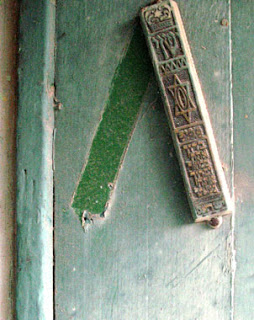

Bava Metzia 102 - Rights and Obligations of a Landlord and his Tenant
If one rents a house to his fellow, it is the duty of the tenant to prepare a mezuzah for it, and when the tenant leaves, he should not take the mezuzah away, even to affix in another house. He can, however, demand compensation from the next resident.
If one rents a house to his fellow for a year, and the year was then proclaimed a leap year, that is, an extra month was added, the tenant need not pay additional rent because of it. If, however, he rented the house to the tenant by the month, and the year was then proclaimed a leap year, the tenant must pay rent for the extra month. The last ruling is obvious and is only taught for the sake of completeness.